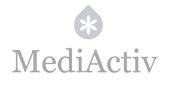

Trade Mark Journal No.2025/045 7 November 2025
UK00004282625 23 October 2025 (3,5,35,41,44)

- Class 3
- Cosmetic preparations; beauty products; cosmetic creams; skin lotions; facial serums; facial toners; cosmetic masks; exfoliating preparations; essential oils; oils for cosmetic use; non-medicated aromatherapy products; make-up products; make-up removers; lipsticks and lip liners; face powders; mascara; eye shadows; nail polishes; hair care products; shampoos; hair conditioners; hair masks; hair styling preparations; hair gels; hair mousses; products for artificial nails; cosmetic products for eyelashes and eyebrows; non-medicated soaps; shower gels; bath gels; non-medicated bath salts; deodorants for personal use; perfumes; colognes; fragrances; sun protection preparations and sun creams; self-tanning preparations; after-sun preparations; anti-wrinkle creams; anti-ageing creams; firming creams; nourishing creams; moisturizing creams; soothing creams; cosmetic preparations for the eye contour; night creams; day creams; non-medicated scar healing cosmetic preparations; cosmetic preparations for acne; cosmetic preparations for reducing skin blemishes; depigmenting cosmetic products; firming body creams; body scrubs; hand creams; foot creams; lip balms; hair masks; cosmetic preparations in the form of serums; cosmetic sprays; facial and body mists; cosmetic ampoules; cosmetic preparations containing plant stem cells; cosmetic products containing collagen; cosmetics containing hyaluronic acid.
- Class 5
- Pharmaceutical and dermocosmetic preparations; medicinal creams and ointments for the skin; dermatological products; medical preparations for the treatment of acne; pharmaceutical preparations for scar care; dressings impregnated with pharmaceutical substances; nutritional supplements for skin, hair and nail care; food supplements for beauty; vitamins and minerals for cosmetic use; medicinal products based on collagen and hyaluronic acid; essential oils for medical purposes; natural preparations with therapeutic purposes for skin care.
- Class 35
- Retail and wholesale services, including online retail and wholesale services, in relation to cosmetic, dermocosmetic, beauty and personal care products; retail services provided via websites featuring cosmetics, perfumes, hygiene products, nutritional supplements and beauty devices; business management services in the field of cosmetics and aesthetics; organisation of trade fairs, exhibitions and commercial events in the field of beauty and cosmetics; marketing, promotion and advertising services in the cosmetic sector.
- Class 41
- Training and education services in the fields of cosmetics, beauty, aesthetics and skin care; organisation and conducting of courses, workshops and seminars in cosmetics and aesthetics, both in-person and online; vocational training in dermocosmetics and aesthetics; educational and certification programmes in the field of cosmetics; preparation and distribution of teaching materials relating to cosmetics and aesthetics.
- Class 44
- Beauty salon services; beauty treatment services; facial and body treatments; aesthetic medicine services; consultancy relating to skin care and dermocosmetics; advisory services in the field of aesthetics and cosmetics; non-surgical cosmetic treatments; spa services; wellness and personal care services; application of cosmetic products; non-invasive facial rejuvenation treatments; non-surgical chemical peels; non-surgical treatments using hyaluronic acid and collagen; nutritional advice relating to beauty and skin care.
LAPOINTE SAS
Representative: IK-IP Ltd